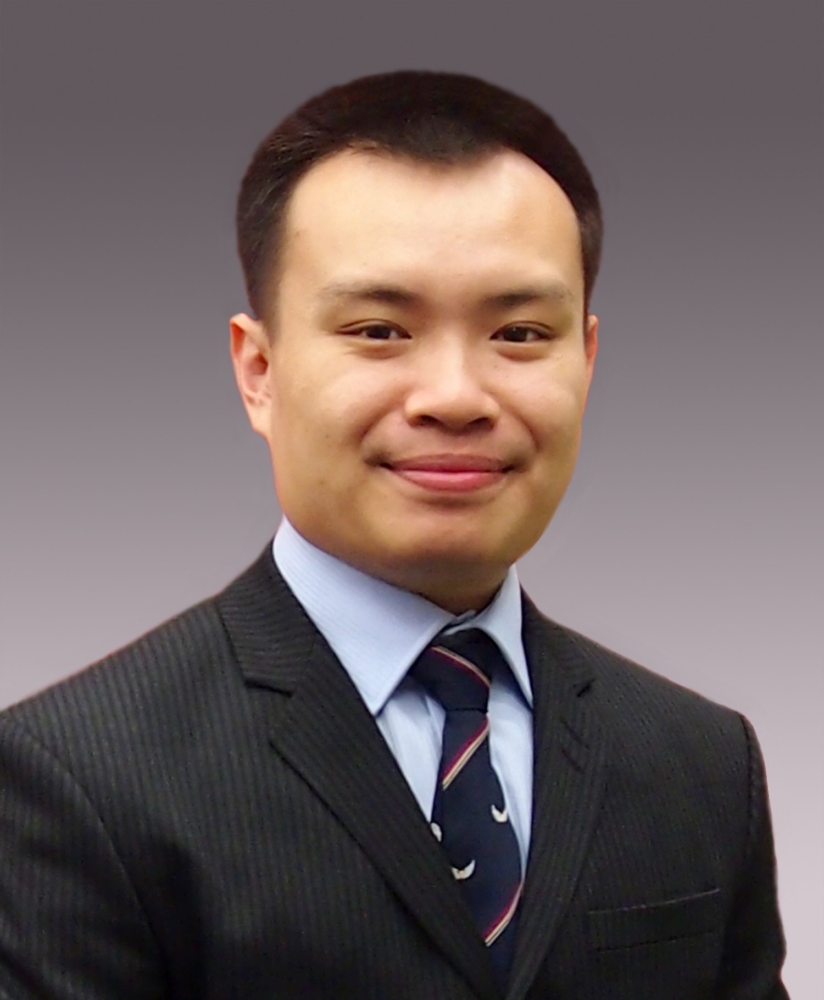

IROS2020 Half-day Workshop
Mechanisms and Design from Inception to Realization
Date: October 29, Thursday, 2020
Time: 7:50AM - 12:20PM, Eastern Standard Time (New York Time)
The event is free, but it needs pre-registration. Please register online Zoom Webinar through this link: Registration
(https://ccny.zoom.us/webinar/register/WN_Dp9XyEbBTSiKe70QbUzJxA)
Note: This registration link has been updated on 09/28/2020, and if you have registered for the event before that using the old link, please register again using the current link.
Jump to: Topics, Organizers, Speakers, Schedules.
About the Workshop
Mechanisms and design are critical to many advances in various fields of robotics. Still, many aspects of the design process are often left out of the reports on the work (like publications and presentations), which focus almost exclusively on the final iteration and its performance. This workshop aims to provide its audience an instructive view into the complete design process of some of the most successful of today's robots, from idea to realization. Invited speaker and contributors will present their work, starting from the original idea that sparked the process, through multiple design iterations (including failed prototypes and lessons learned), and finally arriving at the "demo unit". The workshop will illustrate this process in multiple domains. Instead of focusing on a particular research advancement, presentations and contributions will center on the process of design as fundamental to many areas, and illustrate it through multiple novel mechanisms and robots at the leading edge of the state of the art.
TOPICS:
- Mechanism and design
- Design process
- Failure resilient, robot safety
- Human-robot collaboration
- Exoskeletons and wearable robots
- Soft robots, surgical robots
ORGANIZERS:

Hao Su |

Grace X. Gu |

Kyujin Cho |
|

Darwin Lau |

Claudio Semini |

Damiano Zanotto |

Matei Ciocarlie |
||
SPEAKERS:
Grace X. Gu, Assistant Professor
Department of Mechanical Engineering, University of California, Berkeley
Bio: Professor Gu's research interests fall in the following categories (1) bioinspired design, (2) multi-physics modeling, (3) machine learning driven design, (4) advanced additive manufacturing technologies, and (5) soft robotics applications. Opening the design space of functional objects that can be printed will drive and revolutionize the face of additive manufacturing. More information is given below by category. Please see our publications page for examples from across these exciting research avenues.

Koichi Suzumori, Professor
School of Engineering, Tokyo Institute of Technology
What made me develop soft robot 34 years ago?
I developed my first soft robot, named Flexible Microactuator, FMA in 1986. I will talk about why and how I developed it. I believe that we generally come up with various vague ideas of new mechanisms to meet the requirements, but I’m afraid we often exclude them unconsciously without being explicitly aware of them. I believe a key to creating new mechanisms and designs is to take a vague idea out of our mind and give it concrete form. From my experience in FMA development, I believe that two points are important: 1) don’t be afraid to differ from trends, and 2) be confident in the correctness of your idea. Even if your idea is correct, you cannot overcome the difficulties in the realization process without confidence in it. In my case, FEM helped me; seeing the results of the FEM helped me to be confident in the correctness of my idea and to overcome my hesitation and move on to prototyping.
Bio: Professor Koichi's research focuses on Intelligent mechanics/Mechanical systems (Robotics, Mechatronics, Softmechanics, Actuator, Micro/Nano mechatronics).

Bram Vanderborght, Professor
Faculty of Applied Sciences, Department of Mechanical Engineering, Vrije Universiteit Brussel
Bio: Prof. dr. ir. Bram Vanderborght was born in Belgium in 1980. I received the degree in the study of Mechanical Engineering at the Vrije Universiteit Brussel in 2003 with highest distinction. Since 2003 I was researcher at the VUB, supported by the Fund for Scientific Research Flanders (FWO). In May 2007 I received my PhD in Applied Sciences. The focus of my research was the use of adaptable compliance of pneumatic artificial muscles in the dynamically balanced biped Lucy. In May-June 2006 I performed research on the humanoids robot HRP-2 at the Joint Japanese/French Robotics Laboratory (JRL) in AIST, Tsukuba (Japan) in the research "Dynamically stepping over large obstacles by the humanoid robot HRP-2". I received a 3-year post-doc grant with mobility grant from the FWO. From October 2007-April 2010 I worked as post-doc researcher at the Italian Institute of Technology in Genova (Italy) on the humanoid robot iCub and compliant actuation. Since October 2009, I am appointed as professor at the VUB where I teach mechatronics and give a robotics project. From October 2011-Sept 2016, I was research director at the Universitatea Babes-Bolyai, Department of Clinical Psychology and Psychotherapy with a project on robot assisted therapy with ASD children and VUB-PI of the DREAM project. I received an ERC Starting Grant on Series-Parallel Elastic Actuation for Robotics (SPEAR). I was a member of the Young Academy of the Flemish Academy of Belgium for Science and the Arts. Currently I coordinate EU FET SHERO SHERO project and Marie Curie ITN SMART project. I am VUB-PI of EU project SOPHIA. I am the core lab manager of Flanders Make in Flexible Assembly and member of Brubotics. I also co-lead the Homo Roboticus project on how to keep the human values central in a robotised world. I am the Editor In Chief of IEEE Robotics and Automation Magazine. My research interests include the use of soft and self healing actuators for cognitive and physical human robot interaction in applications in health and manufacturing. Our work is on display in the AI Experience Center.

Sangbae Kim, Professor
Department of Mechanical Engineering, Massachusetts Institute of Technology
Bio: Prof. Sangbae Kim, is the director of the Biomimetic Robotics Laboratory and a Professor of Mechanical Engineering at MIT. His research focuses on the bio-inspired robot design by extracting principles from animals. Kim's achievements on bio-inspired robot development include the world's first directional adhesive inspired from gecko lizards, and a climbing robot, Stickybot, that utilizes the directional adhesives to climb smooth surfaces featured in TIME's best inventions in 2006. Recent achievement includes the development of the MIT Cheetah capable of stable outdoor running up to 13mph and autonomous jumping over an obstacles at an efficiency of animals. This achievement was covered by more than 300 media articles. He is a recipient of best paper award from International Conference on Robotics and Automation (2007), King-Sun Fu Memorial Transactions on Robotics (2008) and IEEE/ASME transactions on mechatronics (2016), DARPA Young Faculty Award (2013), NSF CAREER award (2014), and Ruth and Joel Spira Award for Distinguished Teaching (2015).

Jean-Pierre Merlet, Professor
INRIA
Appropriate design methodology for designing parallel robots
Our work on the design of parallel robots has begun since its start under the assumption that uncertainties, although always bounded, are unavoidable for a mechanical design. On the other hand in all of our designs we have set a list of performance requirements for the real robots, some being stringent (for example for safety purposes), some other being flexible to a certain amount (e.g the desired workspace). We have developed a methodology called ''appropriate design'', based on interval analysis, that allows one to determine nominal values of the design parameters in such way that in spite of the uncertainties the physical instance of our design is guaranteed to satisfy our requirements. An interest of this approach is that the method does not provide a single design solution but a whole set, thereby allows to consider various compromises in term of performances. But this method has also the advantage to allow to predict what will be the behavior of the real robot under computer control, hence providing clues on what perception information will be necessary to obtain a correct behavior of the robot. This approach will be illustrated on our numerous prototypes.
Bio: Professor Merlet's research area in mechanism theory are: Forward and Inverse Kinematics, Singular configurations, Workspace determination, Optimal design, studied with geometrical and numerical methods. Most of the algorithms I have developped in mechanism theory make an intensive use of optimization and systems solving methods developped in the project library.
Hao Su, Assistant Professor
Department of Mechanical Engineering, City University of New York, City College
Bio: Hao Su is Irwin Zahn Endowed assistant professor in the Department of Mechanical Engineering at the City University of New York, City College and the Director of the Lab of Biomechatronics and Intelligent Robotics (BIRO). He was a postdoctoral research fellow at Harvard University and the Wyss Institute for Biologically Inspired Engineering. Prior to this role, he was a Research Scientist at Philips Research North America where he designed robots for lung and cardiac surgery. He obtained the Ph.D. degree on Surgical Robotics from the Department of Mechanical Engineering at Worcester Polytechnic Institute. Dr. Su received NSF CAREER Award,Toyota Mobility Challenge Discover Award, the Best Medical Robotics Paper Runner-up Award in the IEEE International Conference on Robotics and Automation (ICRA) and Philips Innovation Transfer Award. He received the Advanced Simulation & Training Award from the Link Foundation and Dr. Richard Schlesinger Award from the American Society for Quality. He holds patents on surgical robotics and socially assistive robots.

Kaspar Althoefer, Professor of Robotics Engineering
Head of Centre for Advanced Robotics (ARQ), School of Engineering and Materials Science, Queen Mary University of London
Stiffness controllability in soft robots interacting with physical environments
Bio: Professor Althoefer is an experienced roboticist leading competitively funded research on soft robotics, intelligent micro-sensing systems and interaction dynamics modelling with applications in minimally invasive surgery, assistive technologies and human-robot interaction at Queen Mary University of London. He acquired in excess of £5.7M as Principal Investigator from national/international funding bodies and successfully completed 22 PhD projects. Professor Althoefer’s research team, currently comprising 10 postdoctoral research associates and PhD students, is involved in funded collaborative research with leading London hospitals, European research organisations and international companies creating novel robot-assisted solutions for cardiac catheterisation, foetal ultrasound monitoring, tissue diagnosis using miniaturised stiffness sensors and ergonomically-optimised human-robot interaction. Over the last decade, the team has built a large portfolio of projects in application-oriented research for the healthcare and manufacturing sectors with funding from organisations such as EPSRC, European Commission (including coordination of two EU-projects), Wellcome Trust and UK-based charities, exceeding £30M and producing more than 250 peer-reviewed papers.

Carmel Majidi, Professor
Department of Mechanical Engineering, Carnegie Mellon University
Cutting the Cord – Integrated Sensing, Actuation, and Power for Untethered Soft Robots
Robots made out of soft materials typically require tethered connections to external hardware for off-board power and computing. This is because the muscle-like actuators used in most soft robotic applications utilize unconventional power sources (e.g. pneumatics, fluidics, high voltage) that are incompatible with miniaturized electronics, microcontrollers, and batteries. Over the past ten years, I’ve been interested in creating soft robots that are fully untethered and can move at speeds similar to that of natural organisms. While commonly demonstrated in piecewise rigid robots, achieving this functionality in soft robots has proven to be challenging. In this talk, I will review recent efforts by my group to cut the cord and achieve untethered functionality for soft robots capable of inchworm-like crawling, walking, and swimming. In particular, I will focus on the evolution of these robot systems and how we converged on certain architectures for soft actuation and robot design. In addition to discussing systems-level implementations of untethered soft robots, I will also briefly touch on device-level subcomponents that will enable untethered functionality in future soft robotic systems. This includes elastically deformable batteries, energy harvesting transducers, and sensors that wirelessly transmit recordings of mechanical deformation.
Bio: Carmel Majidi is the Clarence H. Adamson Professor of Mechanical Engineering at Carnegie Mellon University, where he leads the Soft Machines Lab. His lab is dedicated to the discovery of novel material architectures that allow machines and electronics to be soft, elastically deformable, and biomechanically compatible. Currently, his research is focused on fluid-filled elastomers that exhibit unique combinations of mechanical, electrical, and thermal properties and can function as “artificial” skin, nervous tissue, and muscle for soft robotics and wearables. Carmel has received grants from industry and federal agencies along with early career awards from DARPA, ONR, AFOSR, and NASA to explore challenges in soft-matter engineering and robotics. Prior to arriving at CMU, Prof. Majidi had postdoctoral appointments at Harvard and Princeton Universities and received his PhD in Electrical Engineering at UC Berkeley.

Elliott Rouse, Assistant Professor
Department of Mechanical Engineering, University of Michigan
Strategies for the design and control of wearable robotics: a case study in the Open Source Leg
The creation of wearable robotic systems requires careful and thoughtful design choices to ensure the system balances high performance and low mass. In this talk, I will describe our process for designing wearable robots, with emphasis on priorities, tradeoffs, and lessons learned. I will describe a four step process for analyzing system performance prior to design, and then discuss design strategies implemented in our Open Source Leg. The Open Source Leg is an open and freely available hardware platform designed to foster research on prosthetic control systems. The system has been designed for ease of assembly, manufacturing, and control, and has been adopted by eight institutions around the world. More information on the Open Source Leg can be found on the project website.
Bio: Dr. Rouse is an Assistant Professor in the Mechanical Engineering Department at the University of Michigan, where he directs the Neurobionics Lab. The vision of his group is to discover the fundamental science that underlies human joint dynamics during locomotion and incorporate these discoveries in a new class of wearable robotic technologies. The Lab uses technical tools from mechanical and biomedical engineering applied to the complex challenges of human augmentation, physical medicine, rehabilitation and neuroscience. Dr. Rouse and his research have been featured at TED, on the Discovery Channel, CNN, National Public Radio, Wired Magazine UK, Business Insider, and Odyssey Magazine. Dr. Rouse is a member of the IEEE Robotics and Automation Society and the IEEE Engineering in Medicine and Biology Society, as well as the American Society of Mechanical Engineers. He is a member of the IEEE EMBS Technical Committee on Biorobotics, and is on the Editorial Board of RESNA’s Assistive Technology journal. He is dedicated to effective student mentoring and training, as well as translating his research to the public through entrepreneurship; he holds patents for the design and control of wearable robotic systems.

Ronald Fearing, Professor
Department of Electrical Engineering and Computer Sciences at University of California, Berkeley
2D Fabrication for 3D Milli-Robots
My group started looking at 2D fabrication 30 years ago as a way to realize silicon micro-robots. 3D structures and mechanisms were created by folding plates with hinges out-of-plane. Our single-material polysilicon structures had flexures for movement but lacked any reasonable approximation to rotary joints. A decade later, to fabricate a 100 milligram flapping flyer, the 2D fabrication was used with a thin metal foil. Now the metal foil acted as a flexure, and folded triangular beams provided stiff links. While kinematic structures with 17 joints showed controllable thrust generation at 110 Hz, the assembly was painful, and flexure lifetime was short. These lessons led us away from monolithic materials in 2003 to stacked heterogenous materials, with distinct layers for structure and joints. In addition to greatly reduced fabrication time, and greatly increased lifetime, the smart composite microstructures (SCM) process has led to surprisingly high performance millirobots, such as the cardboard 10.4 cm X2-VelociRoACH which can run at 4.9 m/s. Serendipitously, the folded designs are highly tolerant to impacts, and the low-mass shell structure leads to high power-to-weight ratio dynamic locomotion. In addition, the folding robot designs can span mass from 0.1 to 100 grams, although requiring ``toughening'' for the heavier robots. By integrating additional layers for sensing and actuation, future folded milli-robots could be made at very high volume and very low-cost.
Bio: Ronald Fearing is a professor in the Dept. of Electrical Engineering and Computer Sciences at Univ. of California, Berkeley, which he joined in Jan. 1988. His current research interests are in milli-robotics, including flying and crawling milli-robots, parallel nano-grasping (gecko adhesion), micro-assembly, and rapid prototyping. He has worked in tactile sensing, teletaction, and dextrous manipulation. He has a Ph.D. from Stanford in EE (1988) and S.B. and S.M. in EECS from MIT (1983). He received the Presidential Young Investigator Award in 1991 and is the co-inventor on 18 US and international patents.

Mark Cutkosky, Professor
Fletcher Jones Chair In The School Of Engineering, Stanford University
Bio: Cutkosky applies analyses, simulations, and experiments to the design and control of robotic hands, tactile sensors, and devices for human/computer interaction. In manufacturing, his work focuses on design tools for rapid prototyping.
TENTATIVE SCHEDULE:
(9 invited speakers will present 20 min/person, 6 selected speakers will present 5 min/person)
07:50 -- 08:00 | Welcome Remarks
08:00 -- 08:20 | Koichi Suzumori, Tokyo Institute of Technology
08:20 -- 08:40 | Bram Vanderborght, Vrije Universiteit Brussel
08:40 -- 09:00 | Sangbae Kim, Massachusetts Institute of Technology
09:00 -- 09:20 | Jean-Pierre Merlet, INRIA
09:20 -- 09:40 | Hao Su, City University of New York, City College
09:40 -- 09:50 | ---------- Coffee Break ----------
09:50 -- 09:55 | Selected speaker #1
09:55 -- 10:00 | Selected speaker #2
10:00 -- 10:05 | Selected speaker #3
10:05 -- 10:10 | Selected speaker #4
10:10 -- 10:15 | Selected speaker #5
10:15 -- 10:20 | Selected speaker #6
10:20 -- 10:40 | Kaspar Althoefer, Queen Mary University of London
10:40 -- 11:00 | Carmel Majidi, Carnegie Mellon University
11:00 -- 11:20 | Elliott Rouse, University of Michigan
11:20 -- 11:40 | Ronald Fearing, University of California, Berkeley
11:40 -- 12:00 | Mark Cutkosky, Stanford University
12:00 -- 12:20 | Panel discussion